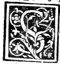

CAPITOLO XVII¶
Del 8. effecto conuerso del precedente.

Se vna linea sia diuisa secondo la proportione hauente el mezzo e doi extremi sempre de quel cerchio delquale la magior parte fia lato dello exagono del medesimo la menore ne fia lato del decagono. Verbi gratia. Se la linea diuisa fosse io, la sua magior parte che e R. i25 m. 5. sempre sira el lato delo exagono de vn cerchio, del quale el diametro sira el doppio de R. i25 m. 5. cioè R. 5oo m. io.
Dico che de quel medesimo cerchio i5 m. R. 12 5. menor parte ne fia lato del decagono equilatero in epso collocato. E de questo conuerso molto se ne serue Ptolomeo nel 9. capitulo dela prima directione del suo almegesto a demostrare la quantità dele cordi degliarchi del cerchio. Commo similmente aperto se demostra sopra la predicta 9. del i3. geometrice.
Marginal Woodcut Diagrams (Paganini 1509)¶

Folio 0028 Diagram 1¶